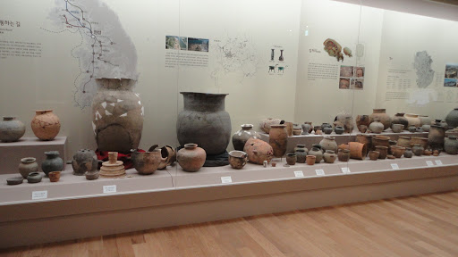
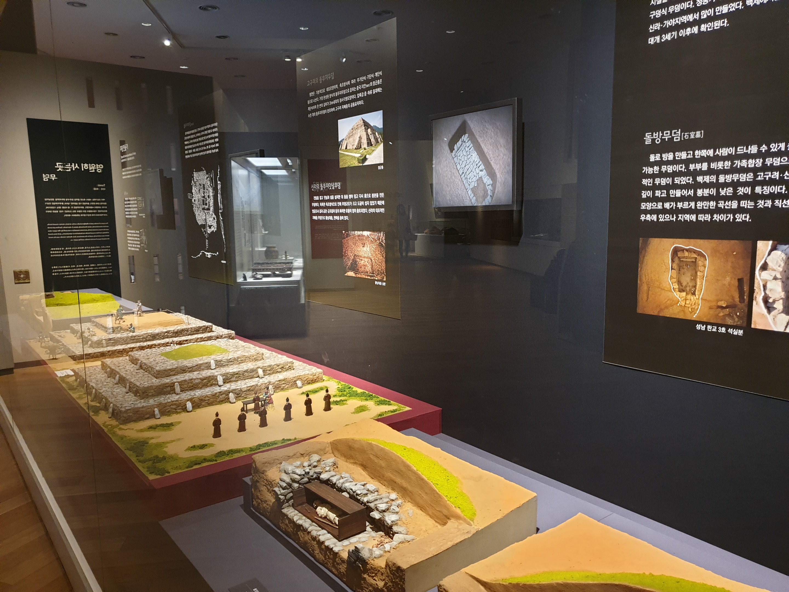

①
②
③
④

풍납토성 성벽의 전체 길이는 약 3.5km이다. 이를 아랫변 너비 43m, 윗변 너비 15m, 높이 12m의 사다리꼴 흙 구조물을 기준으로 계산하면 풍납토성 성벽을 쌓는 데 대략 1,075,200㎥～1,344,000㎥의 흙이 필요하다. 1,075,200㎥는 흙을 정돈하지 않고 마구 쌓아놓을 경우에 필요한 수치이며 1,344,000㎥는 흙을 잘 다지며 쌓을 경우에 필요한 흙의 양이다. 풍납토성은 잘 다져쌓은 토성이므로 체적 1,344,000㎥를 기준으로 계산하면 15톤 덤프트럭(8㎥) 168,000대를 움직여야 하는 막대한 분량이다.
4세기 무렵 백제의 전체 인구는 약 70～80만명이었다.당시 백제는 국가의 존망이 걸린 단기간의 전쟁에 3～4만명을 동원할 수 있었다. 군사 내지 일꾼은 보통 15세 이상의 건강한 남성이었으므로 1가구(5인기준)당 차출 대상자는 1～2인에 불과했으며, 그조차도 장정을 차출당한 집안 식구들의 생계 보전을 위해 이웃한 2～3가구의 장정을 차출하지 못하는 조건이었다. 백제로부터 1천여년이 흐른 뒤인 조선시대에는 군역에서 정병 1인당 2～3인의 봉족을 두었다고 한다. 그러므로 농기구가 상대적으로 부실했던 고대 백제의 경우에는 군역 혹은 노역에 장정 1인을 차출하려면 장정이 속한 해당 1가구는 물론 이웃한 3～4가구를 봉족으로 지정해야만 했을 것이다. 이렇게 따지면 고대사회에서 하루 1만명 동원은 배후에 약 20만명의 지원을 전제한 것이라 할 수 있다.
몇 만년 전부터 한강에 터를 잡은 사람들 구석기인들의 한강을 젖줄로 치열한 삶을 살았으리
농경과 토기 : 한강 유역의 신석기인은 어떻게 살았을까?
청동무기는 계급을 만들고 나라를 세웠다. 당시 서울에서는 어떤 일이 일어났을까?
북쪽 요령 만주 지역에서 고조선과 부여가 서고, 고구려가 성장하는 가운데 온조는 무리를 이끌고 남똑 한(韓)으로 내려온다.
졸본부여에서 무리를 이끌고 남쪽으로 내려온 온조일행은 부아악(북한산)에 올라 지세를 살핀 뒤 한강 남쪽의 위례(풍납토성 일대)에 백제를 세웠다. 이 때가 기원전 18년, 지금으로부터 2천여 년 전이다.
백제는 3세기에 나라의 기틀을 굳건히 다지고 4세기 근초고왕 때 전성기를 맞이한다. 북으로 대동강, 남으로 땅끝까지 영토를 넓힌 백제는 다양한 문화를 꽃 피웠다. 당시 백제의 도읍은 한성 이었다. 풍납토성과 몽촌토성을 합친 이름이다.

백제사람들은 생선을 많이 먹었다. 유적에서 상어 뼈도 발견 되었다. 석촌동, 가락동에는 백제의 왕실묘역이 있었다. 백제사람의 무덤은 매우 다양해서 계층과 지역에 따라 각각 달랐다. 여러가지 형태의 무덤에는 어떤 의미가 담겨 있을까?
백제는 서해를 건너 중국과 교류하고 왜에 문물을 전파 하였다. 4~5세기에 백제는 고구려,가야,탐야는 문론 중국의 남,북조,왜등 바다건너의 많은 나라와 고류하고 경쟁하였다. 6세기에 이역만리 중국땅을 밟은 단정한 옷차림의 백제사신 그림 [양직공도]를 통해 백제사람의 문화수준을 확인할 수 있다.
한반도의 중부지역을 가로지르는 한강은 백제,고구려,신라가 치열하게 충돌한 곳이다. 한강의 주인은 백제-고구려-신라순으로 바뀌었다. 기원전 18년에 백제가 지금의 서울에서 나라를 세우고 493년 동안 최대 전성기를 구가하였다. 475년, 고구려가 서울을 빼앗고 551년까지 76년간 남방의 거점으로 활용하였다. 553년부터는 신라가 서울과 한강유역을 차지하고 중국으로 통하는 교통로와 군사거점으로 활용함으로 삼구공일의 토대로 마련했다.
475년 백제의 수도 한성(서울)이 고구려의 공격으로 함락되자 백제는 웅진(공주)으로 수도를 옮겼다. 국가적 위기를 극복한 백제는 538년 다시 사비(부여)로 수도를 옮겼고, 무화강국으로 거듭났다. 백제문화는 한국 고대문화는 물론 일본 고대문화 형성에도 크게 기여 하였다.